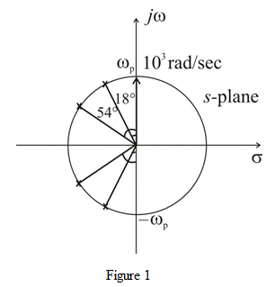

The pair of complex conjugate poles at from the axis is,
The pair of complex conjugate poles at from the  axis is,
axis is,
The pole on real axis is,
The pole zero pattern of the filter is shown in Figure 1.

The pair of complex conjugate poles at from the axis is,
The pair of complex conjugate poles at from the axis is,
The pole on real axis is,
The denominator term for the complex pair of poles at from the  axis is,
axis is,
The denominator term for the complex pair of poles at from the  axis is,
axis is,
The denominator for real pole on the real axis is .
a)
The transfer function of the fifth order filter with transmission zeros at  and the dc gain unity is,
and the dc gain unity is,
.
For unity dc gain, the value of is,
Thus, the transfer function of the filter with all transmission zeros at and unity dc gain is,
.
The type of the filter is all-pole filter.
b)
The number of zeros is,
 and high frequency gain as unity is,
and high frequency gain as unity is,
Thus, the transfer function of the filter with all transmission zeros at  and unity high frequency gain is,
and unity high frequency gain is,
.
The type of the filter is all-pole filter.